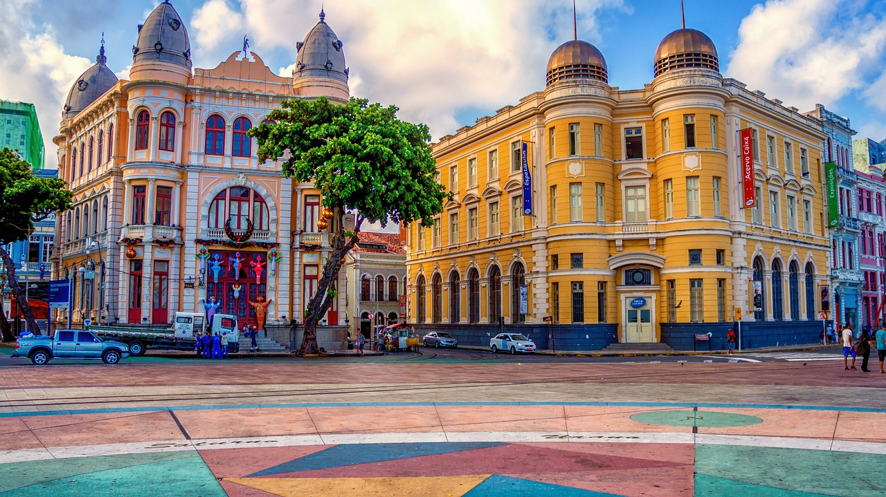

Bem-vindo a Brasiltur
Quem Somos
Somos uma empresa de turismo com foco em levar você,
sua fámília e seus amigos para conhecer o Brasil e suas cidades maravilhosas cheias de história, encanto e beleza.
Venha conhecer o Nordeste
Recife
Recife é uma cidade linda com diversos pontos turísticos em destaque o Marco Zero na Praça Rio Branco, que é um espaço público localizado no bairro do Recife da cidade homônima, capital de Pernambuco. Ele fica próximo ao Porto do Recife e foi instalado em 31 de janeiro de 1938, pelo Automóvel Clube de Pernambuco.
Deste marco são feitas todas as medidas oficiais de distâncias rodoviárias locais. Oficialmente denominada de Praça Barão do Rio Branco.
Além do Marco Zero, existe na praça um busto do Barão do Rio Branco, escultura do francês Félix Charpeutier, colocada ali em 1917, em bronze com uma altura de 2,5m e foi inaugurada, sob um pedestal em pedra de 4,20m, esculpido por Corbiniano Vilaça, em 19 de agosto do mesmo ano. Dando a obra uma altura de 7m.
O norte da praça é banhado pelo estuário do porto do Recife, formado pelo Rio Capibaribe. O estuário é protegido por um dique natural, local em que se encontra o Parque das Esculturas com a famosa obra Coluna de Cristal de 32 metros de altura e inspirada em uma flor descoberta por Burle Marx e varias outras obras em cerâmica do artista Francisco Brennand.
Fonte: Wikipédia